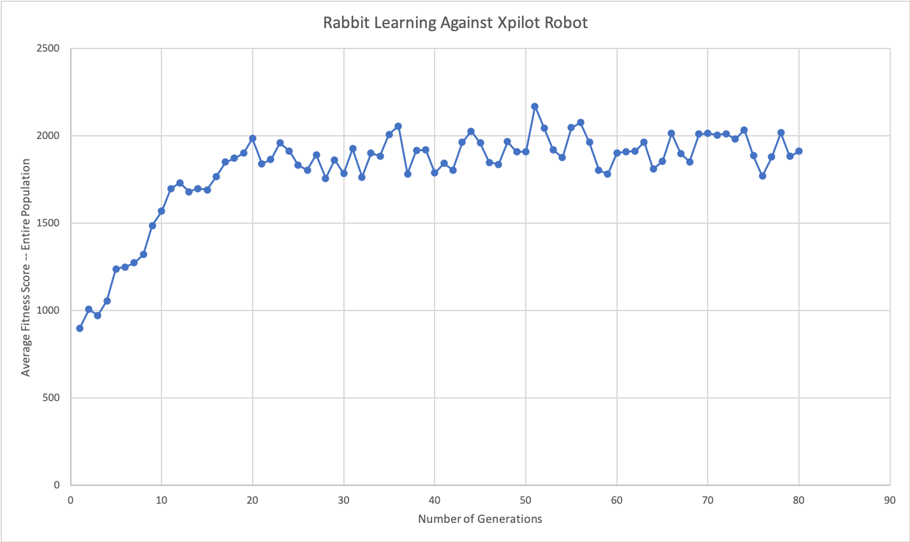
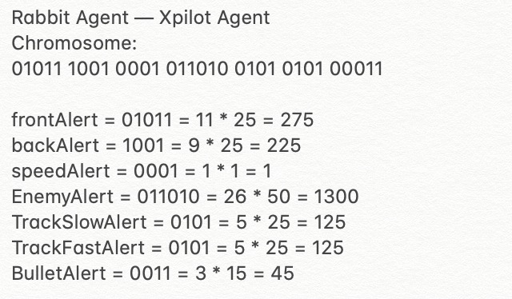
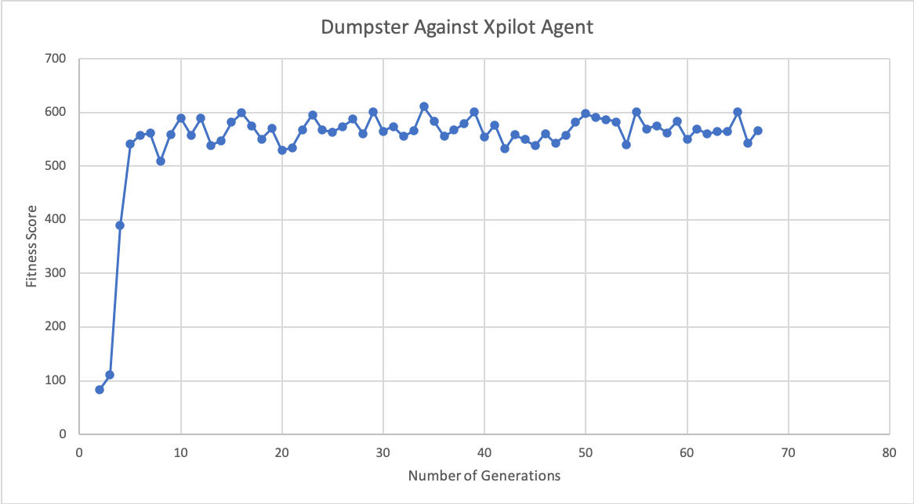
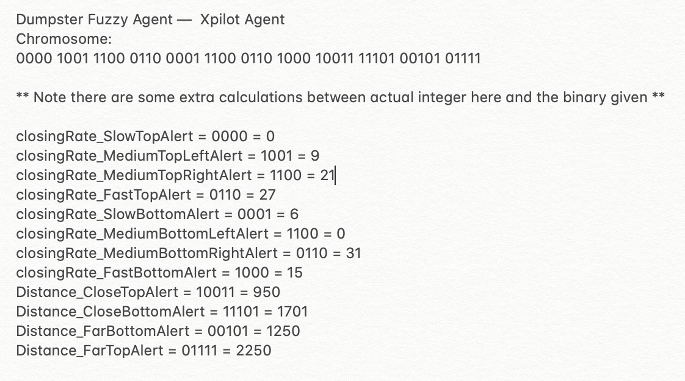

Results
In this project, we made three agents Dumpster, a Fuzzy agent, Rabbit, a defensive agent, and Tiger King, an offensive agent. The purpose of the project was to train Dumpster against Rabbit and Tiger King to observe it's behaviors and how well it did. We first trained Rabbit against an Xpilot agent where it learned to survive and defend itself. However when we tried training the offensive agent, Tiger King, we run into a problem. Tiger king didn't do well on training because it was either getting shot or shooting the opponent too early in the game. It didn't stay alive enough to learn how to avoid walls or learn other survival methods. Since training Tiger King was a fail we compromised by using an Xpilot-AI agent as our offensive agent considering they do will at fighting other opponents. While training, Dumpster, the fuzzy agent, we run into a similar problem. Although Dumpster did a lot better than Tiger King. It still had a problem with walls and trying to stay alive. Take a look at the results of the trainings.
Rabbit Agent - Xpilot-AI Agent
The video above shows Rabbit during its training process. Each new round the best traits are being carried over to achieve the fittest chromosome.

The graph shows the learning curve of Rabbit while training. Rabbit stops improving when its average fitness is around 2000. Afterward, no significant improvement is being made. This can be due to the fact that the rabbit really excels in one area and so it doesn't need to learn more. It is also the case that there is not a significant variation in the population after a while so there is a capacity for how much Rabbit can learn. The fluctuation in the graph later in the learning process could be because of mutation or if Rabbit did something it never did before and carried that trait to the next generation.

Through training Rabbit against an Xpilot agent, we were able to retrieve the chromosome with the highest fitness score. This implies that through the generations the robot was being tested this chromosome was able to stay alive the longest and do the best against its opponents. To keep this chromosome, we are assigning its values to our agent, Rabbit as shown Above.
Rabbit Agent - Xpilot-AI Agent Results
Rabbit acted as expected. It has learned to avoid walls and the enemy. It has limited movement because it has learned that staying at one place can boost its chances of survival. Overall, it is a good defensive agent and it does what it is supposed to do.
Dumpster Agent - Xpilot-AI Agent
The video above shows Dumpster during its training process. Each new round the best traits are being carried over to achieve the fittest chromosome.

The graph above is the result of training our main agent against another Xpilot agent. Production System, Fuzzy Logic and Genetic Algorithms is used to train this agent. Dumpster was able to make significant improvement against the Xpilot agent. However, He stops learning when its fitness score reaches around 600 and that is for the same reasons as when Rabbit stops learning

Through training Dumpster against an Xpilot agent, the chromosome with the highest fitness score is shown above. Its values are then assigned to the agent, Dumpster.
Dumpster Agent - Xpilot-AI Agent Results
Dumpster does not work as expected. During the training, it almost learns too fast and does not do well when it is put up against another agent. it struggles to avoid walls. We think this happens because it is so focused on killing the other agents that it doesn't really get to learn how to do other things, such as avoiding walls. Or it could also because the opponent kills Dumpster too quickly for it to do a lot of learning. Overall, Dumpster has room for improvements and more training can be done.